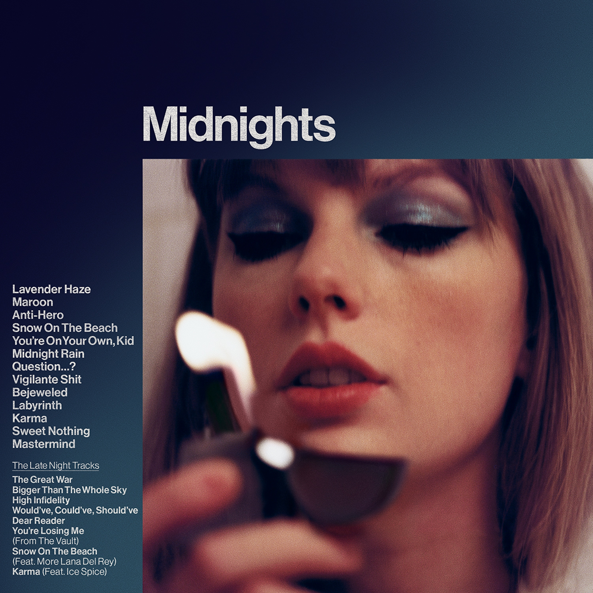
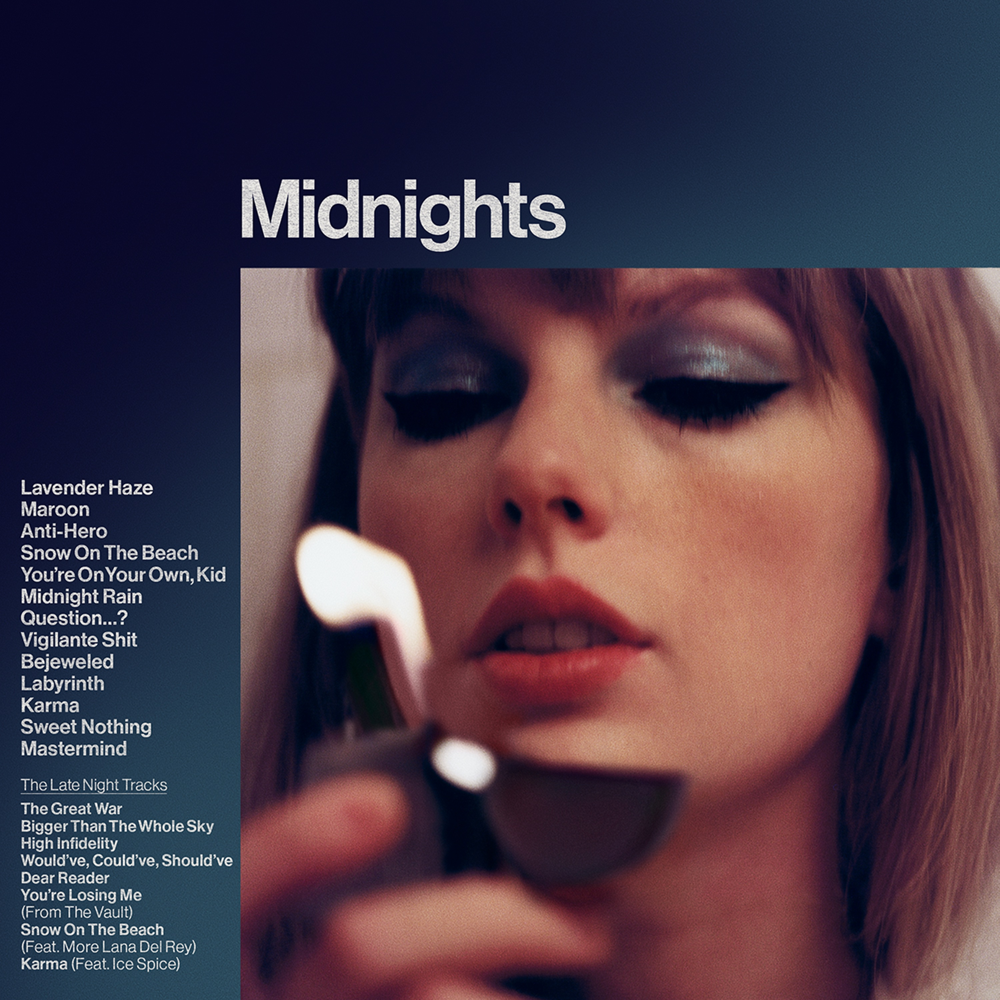

these cats stand out with their stunning features but that isnt the only notable part of a Siamese, they also have a uniquely loud meow thats impossible to ignore. Dont Blame Me has the iconic section of loud beautiful vocals that Siamese cats would really appreciate. The question is just, who can belt it better?

Like their close relative, the Siamese, this is a very vocal breed. Speak Now is about speaking up before it is too late and Balinese is not one to hold their tongue. Make sure you make your thoughts known before the love of your life marries another girl.
This large cat is a living piece of folklore from the frosty landscapes of Norway and the fabled companions of Vikings on their seafaring raids. The Last Great American Dynasty talks about having a piece of the past that keeps the memory alive just like the Norwegian Forest Cat keeps the memories of Viking adventures alive. This is the cat version of Taylor when she said, as she was writing folklore, she imagined herself as a woman in a flowy dress seeing only by candlelight.
 

Commonly described as Regal, Persians are beautiful with their luxurious long white fur that need a lot of maintenance. The song that comes to mind is Bejeweled on the Midnights album. Persian cats shine and they know it. They are the type that when they meet the band and they ask if she has a man she says I Don't Remember.

The song choice is Me! and not just because that is how Taylor got her ragdoll, Benjamin Button. Ragdoll cats know just how special they are. So much so that they might as well say I Promise That You’ll Never Find Another Like Me. Even if they knock your favorite vase on the floor, at least they’ll never bore you, baby!
Sphynx known for their fur, or lack of, are cats that love to be the center of attention. Hairless cats might be the most controversial because people who dont like them, hate them but those who like them, love them. I think the same of the title track on The Tortured Poets Department. For some, it is an instant skip but others appreciate the artistry of eating 7 bars of chocolate and declaring Charlie Puth be a bigger artist.

Another that could be argued to be a member of the folklore group, the Maine Coon looks exactly how you would imagine a whimsical forest fairy in the form of a cat. The Lakes is a special bonus track from the album which is very fitting for the Maine Coon. They love to be around their humans but Those Windermere peaks look like the perfect place to cry and they will not turn the opportunity to take some time for themselves at The Lakes

The Scottish fold is another very special breed to Taylor Swift because that is what Olivia and Meredith are! Like Taylor was while putting out fifteen in 2008, Scottish folds are known for their large owl eyes like a naive fifteen-year-old girl on her first day of high school.


The Peterbald was made accidentally when attempting to create a sphynx. Even though the Peterbald was not appreciated at first, it quickly became an incredibly popular breed in Russia. To everyone that didnt know what they had when they first made the Peterbald; they know their worth to say we are never EVER getting back together... like ever

When you think of a cat, what comes to mind? Most likely you are imagining the widespread American Shorthair. A lot of cats not specially bought for the breed are so mixed that they just became the american shorthair. Just like the american shorthair, Shake It Off is the song most commonly thought of when Taylor Swift is brought up. Dont let them tell you that common is a bad thing, that just means its the most loved! Just remember why theyre so loved when you find hella good hair all over your clothes.

Orange cats truly live like theres no tomorrow and are truly Fearless. They are the type to take your hand and drag you head first, fearless

Did you know that almost all Torties are female? Females have two X chromosomes and that is what carries the genetic information for coat color allowing them to inherit both color patterns from an orange coated parent and black coated parent. They also, iconically, have the sassiest attitude out of any cat which is lovingly referred to as “Tortitude”. Taking responsibility for their outburst? No, instead it’s Look What YOU Made Me Do! I guess if I was special enough to be a Tortie, I would also never think I’m the problem.

Black cats are associated with witches and bad luck but that is nothing more than a myth. Infact, these cats are the opposite! Theyre known for being little energetic goofballs that are difficult not to love. Even though the assumptions about them are not true, they still fit in perfeclty with the song Willow. Life is a willow and it bends right to their wind but youre the willow and the wind is them loudly demanding treats.